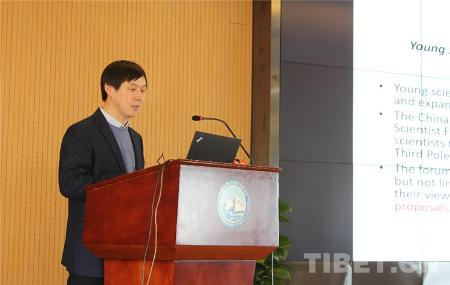
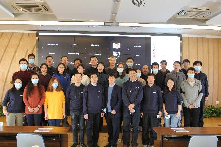

12
月
19
日，中国科学院加德满都科教中心与中国青藏高原研究会、第三极环境计划（
TPE
）瑞典中心联合举办第四届青年科学家论坛。论坛围绕珠峰地区气候和环境变化，以主旨报告和圆桌会议形式开展交叉学科讨论。来自中国、美国、荷兰、瑞典、尼泊尔等国的
80
余位青年科学家通过线上和线下方式参会。
中国青藏高原研究会副秘书长、中科院地理科学与资源研究所研究员张扬建表示
:
“为给第三极地区的青年学者，以及从事第三极区域研究的青年学者提供更多互动和对话的机会，搭建青年科学家交流的国际平台，加强在第三极地区环境研究方面的科学合作。”
美国内华达大学曹文融、青藏高原研究所马伟强、荷兰乌得勒支大学菲利普·克莱恩布林克（
Philip Kraaijenbrink
）、地理科学与资源研究所汤秋鸿、青藏高原研究所高寒生态重点实验室沙利克·拉姆·西格德尔（
Shalik Ram Sigdel
）应邀做了报告。第三极环境计划（
TPE
）瑞典中心、瑞典哥德堡大学欧廷海博士主持了云上圆桌会议。
除北极和南极外，以青藏高原为核心的第三极地区环境变化越来越受到学界和国际社会关注，越来越多的青年科学家成为相关领域的科研力量。而加德满都中心、中国青藏高原研究会及第三极环境计划（
TPE
）的一个重要课题就是推动青藏高原科学研究事业发展，扶持和鼓励第三极周边青年科研人员成长。

张扬建致辞

会议合影